韌性要求與耐震設計
0兩條路
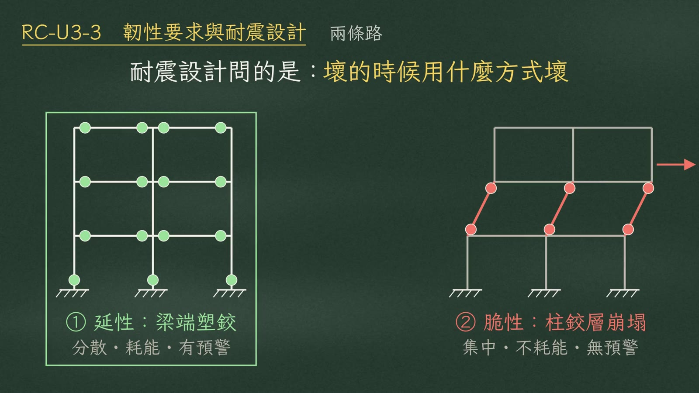
耐震設計問的不是撐不撐得住，而是壞的時候用什麼方式壞。結構有兩條路：
| 塑鉸位置 | 行為 | |
|---|---|---|
| ① 延性：梁端塑鉸 | 分散在每一層梁端 | 大量耗能、有預警 |
| ② 脆性：柱鉸層崩塌 | 集中在同一層柱端 | 瞬間層崩塌 |
1讓分法則
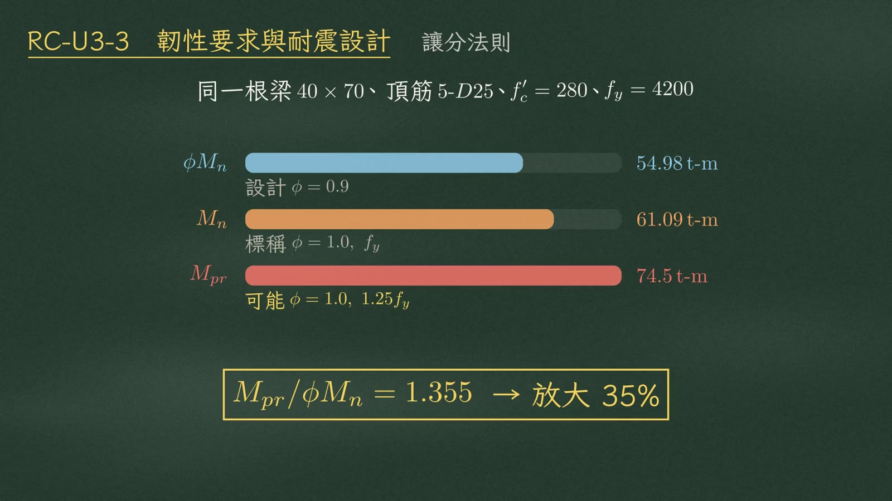
看同一根梁：\(40\times70\)，頂筋 5-D25（\(f'_c=280\)、\(f_y=4200\)）。
| 強度 | 取法 | 數值 |
|---|---|---|
| 設計 \(\phi M_n\) | \(\phi=0.9\)、\(f_y\) | 54.98 t-m |
| 標稱 \(M_n\) | \(\phi=1.0\)、\(f_y\) | 61.09 t-m |
| 可能 \(M_{pr}\) | \(\phi=1.0\)、\(1.25f_y\) | 74.5 t-m |
可能強度 \(M_{pr}\) 比 \(\phi M_n\) 整整大了三成五。
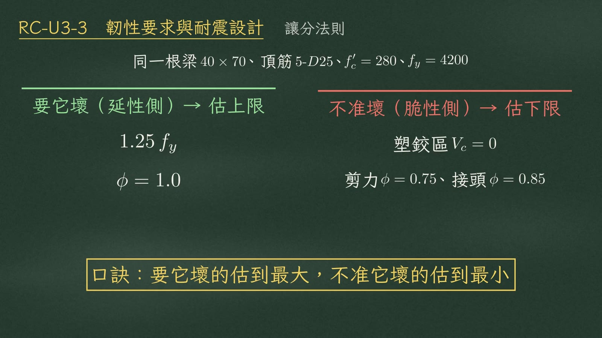
所有奇怪的係數都在做同一件事：
| 估法 | 係數 | |
|---|---|---|
| 要它壞（延性側） | 估上限 | \(1.25f_y\)、\(\phi=1.0\) |
| 不准壞（脆性側） | 估下限 | 塑鉸區 \(V_c=0\)；剪力 \(\phi=0.75\)、接頭 \(\phi=0.85\) |
2關卡二 梁剪力 \(V_e\)
第一關是梁端塑鉸，第二關是梁剪力。耐震梁的剪力不從載重組合來，問的是：兩端同時發揮 \(M_{pr}\) 時，淨跨內的平衡剪力有多大。
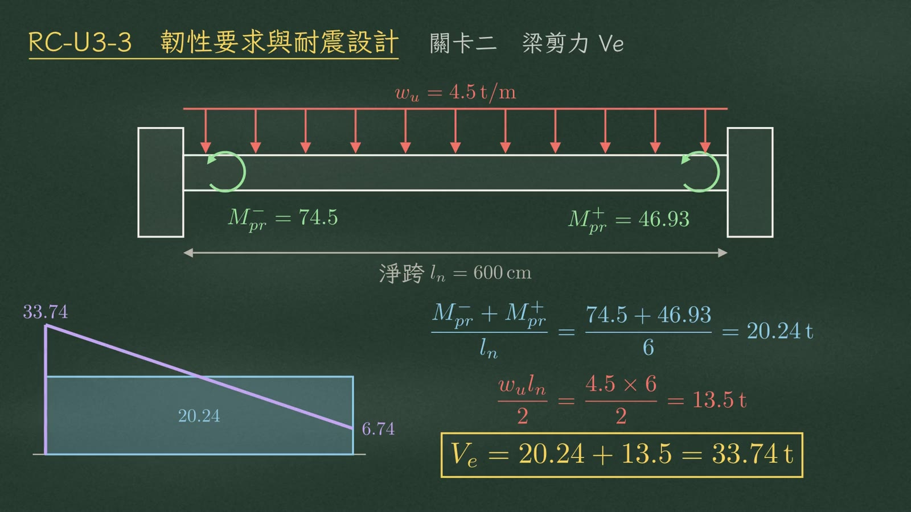
地震項（全跨定值）：
$$\frac{M_{pr}^-+M_{pr}^+}{l_n}=\frac{74.5+46.93}{6}=20.24\ \text{t}$$重力項：
$$\frac{w_u l_n}{2}=\frac{4.5\times6}{2}=13.5\ \text{t}$$同號那端控制：
$$V_e=20.24+13.5=33.74\ \text{t}$$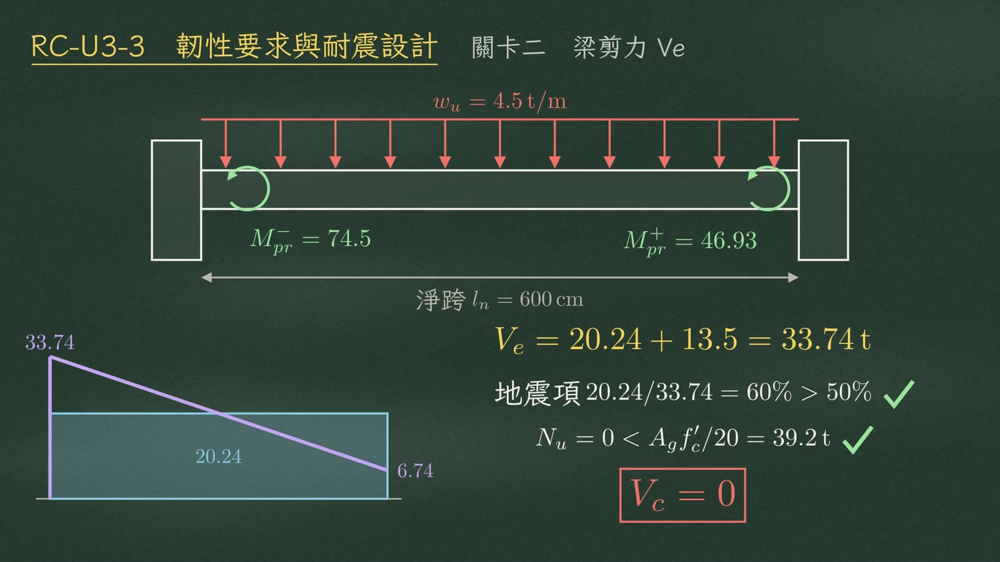
| 條件 | 本例 | |
|---|---|---|
| 地震項超過一半 | \(20.24/33.74=60\%>50\%\) | ✓ |
| 軸力小於 \(A_g f'_c/20\) | \(N_u=0<A_g f'_c/20=39.2\) t | ✓ |
3梁密箍區
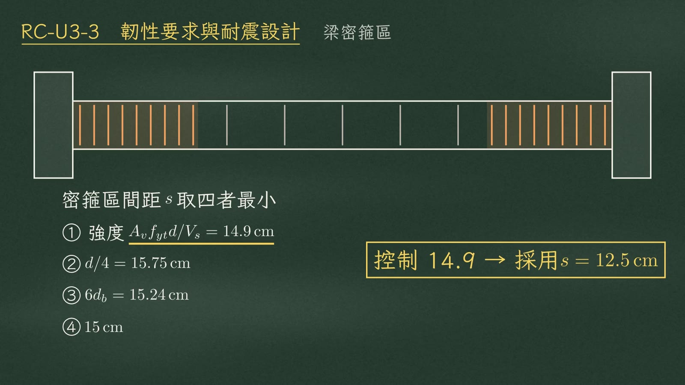
密箍間距 \(s\) 取四者最小：
| 項目 | 數值 |
|---|---|
| ① 強度需求 \(A_v f_{yt} d/V_s\) | 14.9 cm（控制） |
| ② \(d/4\) | 15.75 cm |
| ③ \(6d_b\) | 15.24 cm |
| ④ 定值 | 15 cm |
控制 14.9，採用 \(s=12.5\) cm。
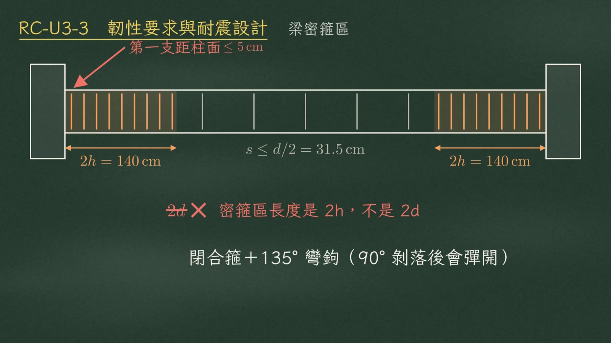
- 密箍區從柱面起算 \(2h\)＝140 cm，不是 \(2d\)。
- 第一支箍筋距柱面 5 cm 內，用閉合箍加 135° 彎鉤（黑板註：90° 剝落後會彈開）。
- 密箍區外，間距不超過 \(d/2\)（\(=31.5\) cm）。
4關卡三 柱圍束
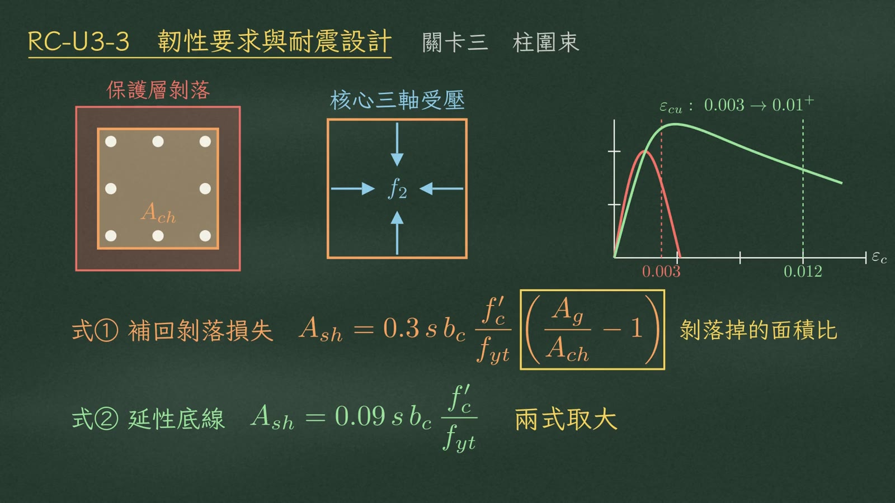
第三關是柱。大變形後保護層一定剝落，只剩箍筋包住的核心 \(A_{ch}\)。箍筋把核心箍成三軸受壓，極限應變從 0.003 拉到 0.01 以上：
$$\varepsilon_{cu}:\ 0.003\ \rightarrow\ 0.01^{+}$$所以 \(A_{sh}\) 兩式取大：
$$\text{式①（補回剝落損失）}\quad A_{sh}=0.3\,s\,b_c\,\frac{f'_c}{f_{yt}}\left(\frac{A_g}{A_{ch}}-1\right)$$ $$\text{式②（延性底線）}\quad A_{sh}=0.09\,s\,b_c\,\frac{f'_c}{f_{yt}}$$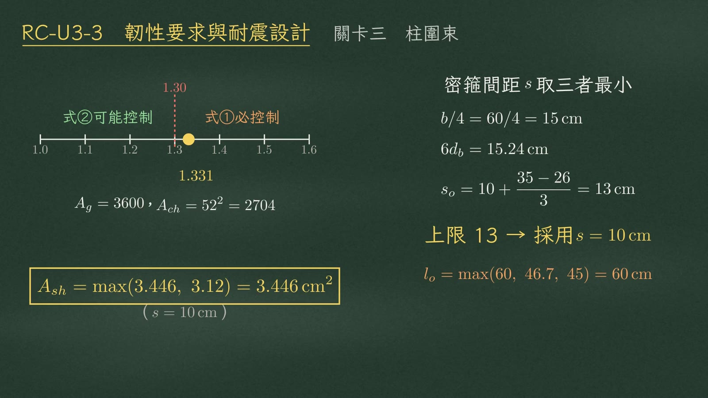
示範柱 \(60\times60\)，\(A_{ch}=52^2=2704\)，\(A_g=3600\)：
$$\frac{A_g}{A_{ch}}=1.331>1.3\ \Rightarrow\ \text{式①必控制}$$ $$A_{sh}=\max(3.446,\ 3.12)=3.446\ \text{cm}^2\quad(s=10\ \text{cm})$$| 間距上限（三者最小） | 數值 |
|---|---|
| \(b/4=60/4\) | 15 cm |
| \(6d_b\) | 15.24 cm |
| \(s_o=10+\dfrac{35-26}{3}\) | 13 cm |
上限 13 cm，採用 \(s=10\) cm；密箍區長 \(l_o=\max(60,\ 46.7,\ 45)=60\) cm。
5強柱弱梁
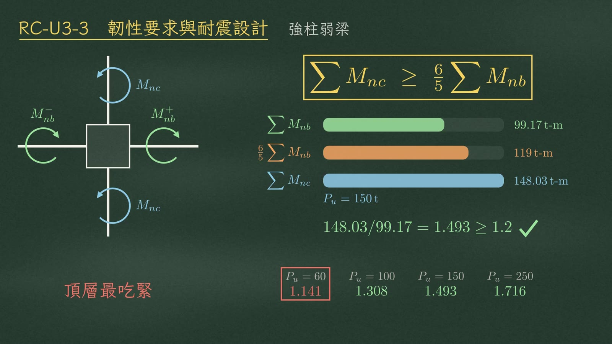
節點上柱的 \(M_{nc}\) 總和，要大於等於五分之六倍梁的 \(M_{nb}\) 總和。
梁 \(\sum M_{nb}=99.17\) t-m，需求 \(\tfrac65\sum M_{nb}=119\) t-m。柱軸力 \(P_u=150\) t 時，兩支 \(\sum M_{nc}=148.03\) t-m：
$$\frac{148.03}{99.17}=1.493\ \ge 1.2\quad\checkmark$$| \(P_u\)（t） | 60 | 100 | 150 | 250 |
|---|---|---|---|---|
| \(\sum M_{nc}/\sum M_{nb}\) | 1.141 ✗ | 1.308 | 1.493 | 1.716 |
6關卡四 梁柱接頭
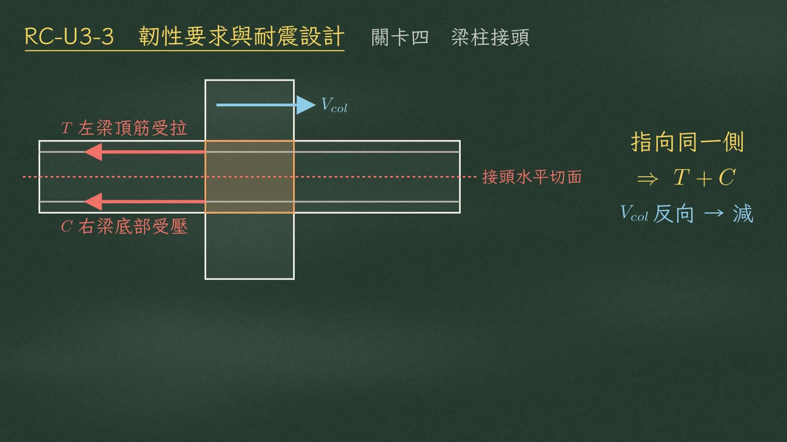
第四關是梁柱接頭。左梁頂筋受拉、右梁底部受壓，在接頭水平切面上指向同一側，所以 \(T\) 和 \(C\) 相加；\(V_{col}\) 反向，要減掉。
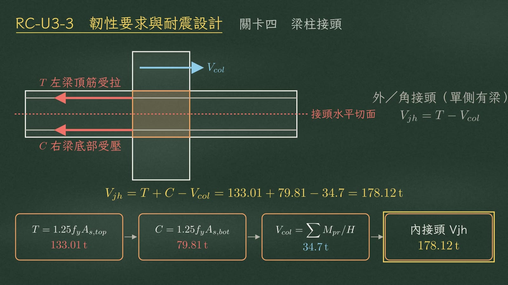
| 項目 | 算式 | 數值 |
|---|---|---|
| \(T\) | \(1.25f_y A_{s,top}\) | 133.01 t |
| \(C\) | \(1.25f_y A_{s,bot}\) | 79.81 t |
| \(V_{col}\) | \(\sum M_{pr}/H\) | 34.7 t |
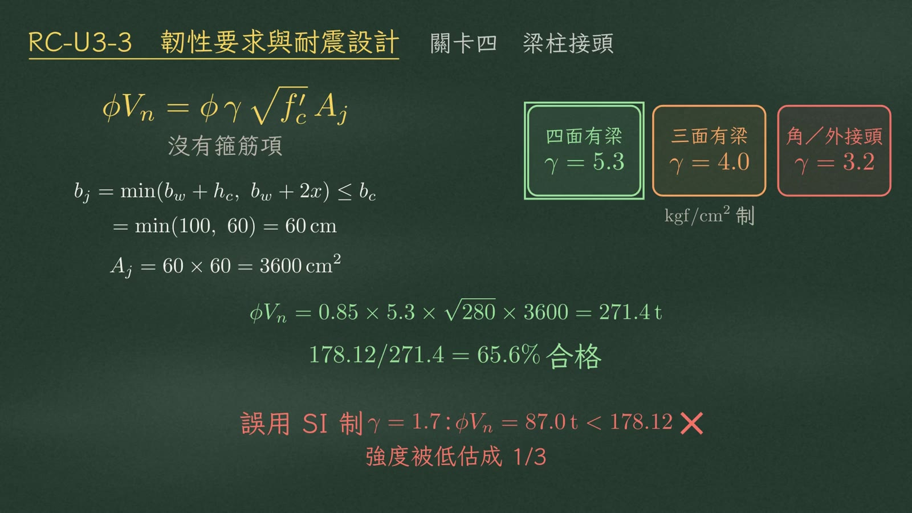
\(b_j=\min(b_w+h_c,\ b_w+2x)\le b_c\)，本例 \(=\min(100,\ 60)=60\) cm，\(A_j=60\times60=3600\) cm²。
| 接頭類型 | γ（kgf/cm² 制） |
|---|---|
| 四面有梁 | 5.3 |
| 三面有梁 | 4.0 |
| 角／外接頭 | 3.2 |
7韌性量化
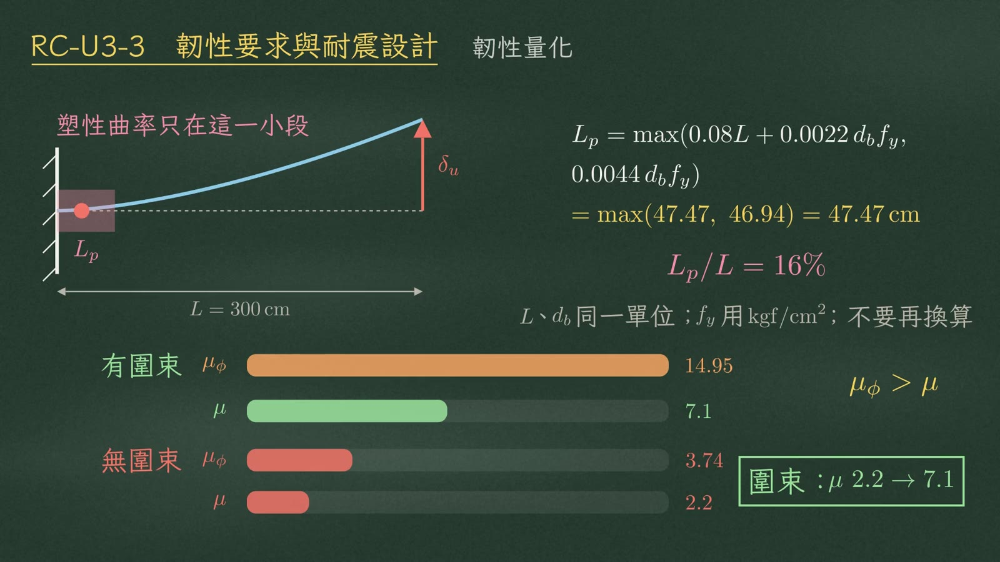
塑性曲率只集中在塑鉸長度 \(L_p\) 這一小段。\(L_p\) 取兩式大值：
$$L_p=\max\left(0.08L+0.0022\,d_b f_y,\ 0.0044\,d_b f_y\right)=\max(47.47,\ 46.94)=47.47\ \text{cm}$$只佔懸臂長度 \(L=300\) cm 的 16%。
| 曲率韌性 \(\mu_\phi\) | 位移韌性 \(\mu\) | |
|---|---|---|
| 有圍束 | 14.95 | 7.1 |
| 無圍束 | 3.74 | 2.2 |
曲率韌性 \(\mu_\phi=14.95\)，到了位移韌性 \(\mu\) 只剩 7.1——\(\mu_\phi\) 永遠大於 \(\mu\)。
8四個陷阱
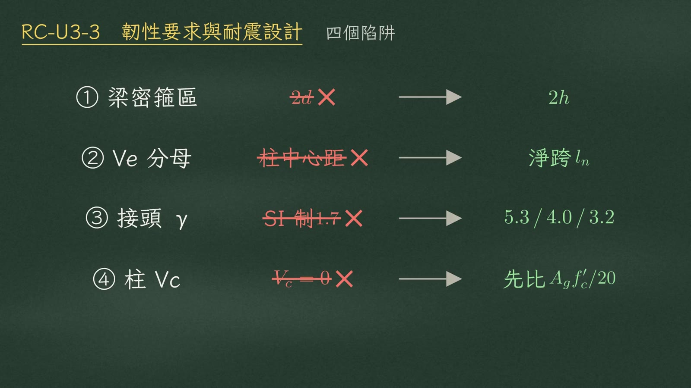
| 陷阱 | ✗ 錯 | ✓ 對 |
|---|---|---|
| ① 梁密箍區長度 | \(2d\) | \(2h\) |
| ② \(V_e\) 分母 | 柱中心距 | 淨跨 \(l_n\) |
| ③ 接頭 γ | SI 制 1.7 | 5.3／4.0／3.2 |
| ④ 柱 \(V_c\) | 直接 \(V_c=0\) | 柱有軸壓，先算 \(A_g f'_c/20\) 的門檻 |
9總結
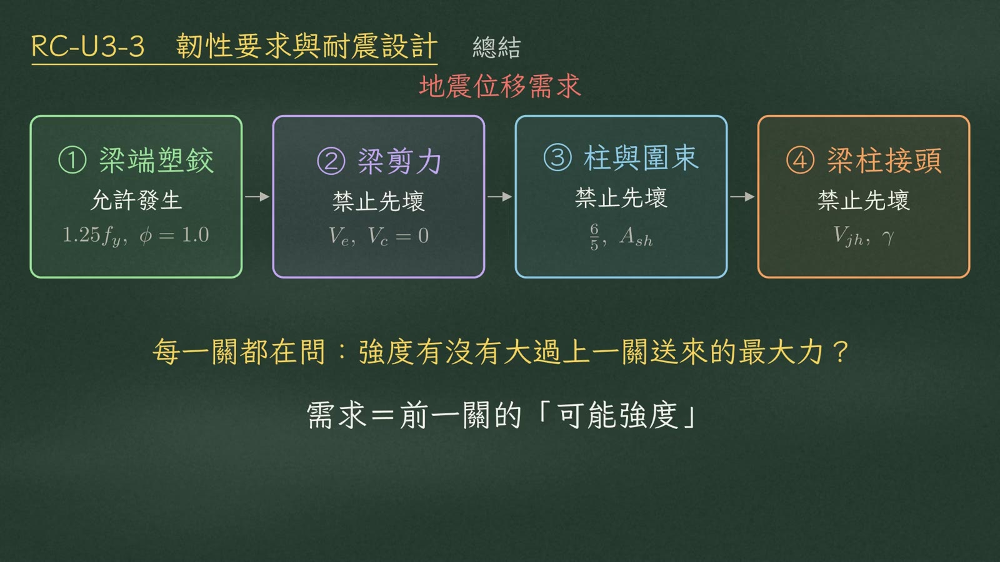
| 關卡 | 態度 | 關鍵量 |
|---|---|---|
| ① 梁端塑鉸 | 允許發生 | \(1.25f_y\)、\(\phi=1.0\) |
| ② 梁剪力 | 禁止先壞 | \(V_e\)、\(V_c=0\) |
| ③ 柱與圍束 | 禁止先壞 | \(\tfrac65\)、\(A_{sh}\) |
| ④ 梁柱接頭 | 禁止先壞 | \(V_{jh}\)、γ |
每一關的需求，都是前一關的可能強度算出來的。
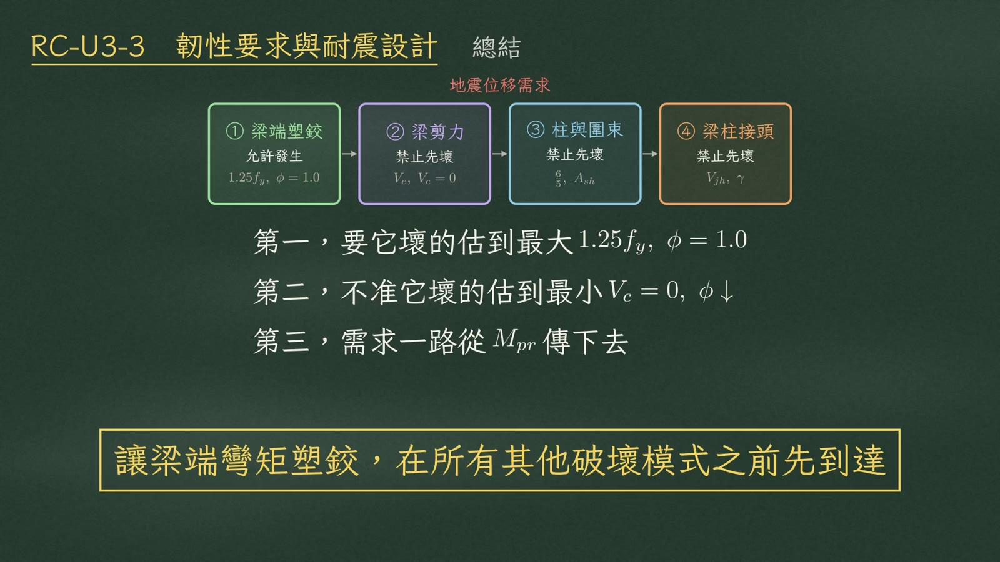
- 要它壞的估到最大：\(1.25f_y\)、\(\phi=1.0\)。
- 不准它壞的估到最小：\(V_c=0\)、\(\phi\) 取小。
- 需求一路從 \(M_{pr}\) 傳下去。